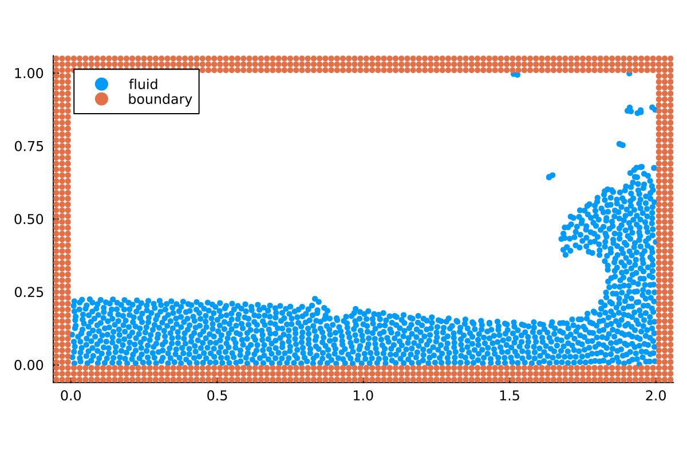

Setting up your simulation from scratch
In this tutorial, we will guide you through the general structure of simulation files. We will set up a simulation similar to the example simulation examples/fluid/hydrostatic_water_column_2d.jl, which is one of our simplest example simulations. In the second part of this tutorial, we will show how to replace components of TrixiParticles.jl by custom implementations from within a simulation file, without ever cloning the repository.
For different setups and physics, have a look at our other example files.
First, we import TrixiParticles.jl and OrdinaryDiffEq.jl, which we will use at the very end for the time integration.
using TrixiParticles
using OrdinaryDiffEqResolution
Now, we define the particle spacing, which is our numerical resolution. We usually call the variable fluid_particle_spacing, so that we can easily change the resolution of an example file by overwriting this variable with trixi_include. In 2D, the number of particles will grow quadratically, in 3D cubically with the spacing.
We also set the number of boundary layers, which need to be sufficiently large, depending on the smoothing kernel and smoothing length, so that the compact support of the smoothing kernel is fully sampled with particles for a fluid particle close to a boundary. In particular, we require boundary_layers >= compact_support. The value for the compact support for each kernel can be found in the smoothing kernel overview.
fluid_particle_spacing = 0.05
boundary_layers = 3Experiment setup
We want to simulate a water column resting under hydrostatic pressure inside a rectangular tank. First, we define the physical parameters gravitational acceleration, simulation time, initial fluid size, tank size and fluid density.
gravity = 9.81
tspan = (0.0, 1.0)
initial_fluid_size = (1.0, 0.9)
tank_size = (1.0, 1.0)
fluid_density = 1000.0In order to have the initial particle mass and density correspond to the hydrostatic pressure gradient, we need to define a state equation, which relates the fluid density to pressure. Note that we could also skip this part here and define the state equation later when we define the fluid system, but then the fluid would be initialized with constant density, which would cause it to oscillate under gravity.
sound_speed = 10.0
state_equation = StateEquationCole(; sound_speed, reference_density=fluid_density,
exponent=7)The speed of sound here is numerical and not physical. We artificially lower the speed of sound, since the physical speed of sound in water would lead to prohibitively small time steps. The speed of sound in Weakly Compressible SPH should be chosen as small as possible for numerical efficiency, but large enough to limit density fluctuations to about 1%.
TrixiParticles.jl requires the initial particle positions and quantities in form of an InitialCondition. Instead of manually defining particle positions, you can work with our pre-defined setups. Among others, we provide setups for rectangular shapes, circles, and spheres. Initial conditions can also be combined with common set operations. See this page for a list of pre-defined setups and details on set operations on initial conditions.
Here, we use the RectangularTank setup, which generates a rectangular fluid inside a rectangular tank, and supports a hydrostatic pressure gradient by passing a gravitational acceleration and a state equation (see above).
tank = RectangularTank(fluid_particle_spacing, initial_fluid_size, tank_size,
fluid_density, n_layers=boundary_layers,
acceleration=(0.0, -gravity), state_equation=state_equation)Fluid system
To model the water column, we use the Weakly Compressible Smoothed Particle Hydrodynamics (WCSPH) method. This method requires a smoothing kernel and a corresponding smoothing length, which should be chosen in relation to the particle spacing.
smoothing_length = 1.2 * fluid_particle_spacing
smoothing_kernel = SchoenbergCubicSplineKernel{2}()You can find an overview over smoothing kernels and corresponding smoothing lengths here.
For stability, we need numerical dissipation in form of an artificial viscosity term. Other viscosity models offer a physical approach based on the kinematic viscosity of the fluid.
viscosity = ArtificialViscosityMonaghan(alpha=0.02, beta=0.0)We choose the parameters as small as possible to avoid non-physical behavior, but as large as possible to stabilize the simulation.
The WCSPH method can either compute the particle density directly with a kernel summation over all neighboring particles (see SummationDensity) or by making the particle density a variable in the ODE system and integrating its change over time. We choose the latter approach here by using the density calculator ContinuityDensity, which is more efficient and handles free surfaces without the need for additional correction terms.
fluid_density_calculator = ContinuityDensity()
fluid_system = WeaklyCompressibleSPHSystem(tank.fluid, fluid_density_calculator,
state_equation, smoothing_kernel,
smoothing_length, viscosity=viscosity,
acceleration=(0.0, -gravity))Boundary system
To model the boundary, we use particle-based boundary conditions, in which particles are sampled in the boundary that interact with the fluid particles to avoid penetration. In order to define a boundary system, we first have to choose a boundary model, which defines how the fluid interacts with boundary particles. We will use the BoundaryModelDummyParticles with AdamiPressureExtrapolation. See here for a comprehensive overview over boundary models.
boundary_model = BoundaryModelDummyParticles(tank.boundary.density, tank.boundary.mass,
state_equation=state_equation,
AdamiPressureExtrapolation(),
smoothing_kernel, smoothing_length)
boundary_system = BoundarySPHSystem(tank.boundary, boundary_model)Semidiscretization
The key component of every simulation is the Semidiscretization, which couples all systems of the simulation. All methods in TrixiParticles.jl are semidiscretizations, which discretize the equations in time to provide an ordinary differential equation that still has to be solved in time. By providing a simulation time span, we can call semidiscretize, which returns an ODEProblem that can be solved with a time integration method.
semi = Semidiscretization(fluid_system, boundary_system)
ode = semidiscretize(semi, tspan)Time integration
We use the methods provided by OrdinaryDiffEq.jl, but note that other packages or custom implementations can also be used.
OrdinaryDiffEq.jl supports callbacks, which are executed during the simulation. For this simulation, we use the InfoCallback, which prints information about the simulation setup at the beginning of the simulation, information about the current simulation time and runtime during the simulation, and a performance summary at the end of the simulation. We also want to save the current solution in regular intervals in terms of simulation time as VTK, so that we can look at the solution in ParaView. The SolutionSavingCallback provides this functionality. To pass the callbacks to OrdinaryDiffEq.jl, we have to bundle them into a CallbackSet.
info_callback = InfoCallback(interval=50)
saving_callback = SolutionSavingCallback(dt=0.02)
callbacks = CallbackSet(info_callback, saving_callback)Finally, we can start the simulation by solving the ODEProblem. We use the method RDPK3SpFSAL35 of OrdinaryDiffEq.jl, which is a Runge-Kutta method with automatic (error based) time step size control. This method is usually a good choice for prototyping, since we do not have to worry about choosing a stable step size and can just run the simulation. For better performance, it might be beneficial to tweak the tolerances of this method or choose a different method that is more efficient for the respective simulation. You can find both approaches in our example files. Here, we just use the method with the default parameters, and only disable save_everystep to avoid expensive saving of the solution in every time step.
sol = solve(ode, RDPK3SpFSAL35(), save_everystep=false, callback=callbacks);
████████╗██████╗ ██╗██╗ ██╗██╗██████╗ █████╗ ██████╗ ████████╗██╗ ██████╗██╗ ███████╗███████╗
╚══██╔══╝██╔══██╗██║╚██╗██╔╝██║██╔══██╗██╔══██╗██╔══██╗╚══██╔══╝██║██╔════╝██║ ██╔════╝██╔════╝
██║ ██████╔╝██║ ╚███╔╝ ██║██████╔╝███████║██████╔╝ ██║ ██║██║ ██║ █████╗ ███████╗
██║ ██╔══██╗██║ ██╔██╗ ██║██╔═══╝ ██╔══██║██╔══██╗ ██║ ██║██║ ██║ ██╔══╝ ╚════██║
██║ ██║ ██║██║██╔╝ ██╗██║██║ ██║ ██║██║ ██║ ██║ ██║╚██████╗███████╗███████╗███████║
╚═╝ ╚═╝ ╚═╝╚═╝╚═╝ ╚═╝╚═╝╚═╝ ╚═╝ ╚═╝╚═╝ ╚═╝ ╚═╝ ╚═╝ ╚═════╝╚══════╝╚══════╝╚══════╝
┌──────────────────────────────────────────────────────────────────────────────────────────────────┐
│ Semidiscretization │
│ ══════════════════ │
│ #spatial dimensions: ………………………… 2 │
│ #systems: ……………………………………………………… 2 │
│ neighborhood search: ………………………… GridNeighborhoodSearch │
│ total #particles: ………………………………… 636 │
└──────────────────────────────────────────────────────────────────────────────────────────────────┘
┌──────────────────────────────────────────────────────────────────────────────────────────────────┐
│ WeaklyCompressibleSPHSystem{2} │
│ ══════════════════════════════ │
│ #particles: ………………………………………………… 360 │
│ density calculator: …………………………… ContinuityDensity │
│ correction method: ……………………………… Nothing │
│ state equation: ……………………………………… StateEquationCole │
│ smoothing kernel: ………………………………… SchoenbergCubicSplineKernel │
│ viscosity: …………………………………………………… ArtificialViscosityMonaghan{Float64}(0.02, 0.0, 0.01) │
│ density diffusion: ……………………………… nothing │
│ surface tension: …………………………………… nothing │
│ acceleration: …………………………………………… [0.0, -9.81] │
│ source terms: …………………………………………… Nothing │
└──────────────────────────────────────────────────────────────────────────────────────────────────┘
┌──────────────────────────────────────────────────────────────────────────────────────────────────┐
│ BoundarySPHSystem{2} │
│ ════════════════════ │
│ #particles: ………………………………………………… 276 │
│ boundary model: ……………………………………… BoundaryModelDummyParticles(AdamiPressureExtrapolation, Nothing) │
│ movement function: ……………………………… nothing │
│ adhesion coefficient: ……………………… 0.0 │
└──────────────────────────────────────────────────────────────────────────────────────────────────┘
┌──────────────────────────────────────────────────────────────────────────────────────────────────┐
│ SolutionSavingCallback │
│ ══════════════════════ │
│ dt: ……………………………………………………………………… 0.02 │
│ custom quantities: ……………………………… nothing │
│ save initial solution: …………………… yes │
│ save final solution: ………………………… yes │
│ output directory: ………………………………… /home/runner/work/TrixiParticles…cs/build/tutorials_template/out │
│ prefix: …………………………………………………………… │
└──────────────────────────────────────────────────────────────────────────────────────────────────┘
┌──────────────────────────────────────────────────────────────────────────────────────────────────┐
│ Time integration │
│ ════════════════ │
│ Start time: ………………………………………………… 0.0 │
│ Final time: ………………………………………………… 1.0 │
│ time integrator: …………………………………… RDPK3SpFSAL35 │
│ adaptive: ……………………………………………………… true │
│ abstol: …………………………………………………………… 1.0e-6 │
│ reltol: …………………………………………………………… 0.001 │
│ controller: ………………………………………………… PIDController(beta=[0.7, -0.23, …iter=default_dt_factor_limiter) │
└──────────────────────────────────────────────────────────────────────────────────────────────────┘
┌──────────────────────────────────────────────────────────────────────────────────────────────────┐
│ Environment information │
│ ═══════════════════════ │
│ #threads: ……………………………………………………… 1 │
└──────────────────────────────────────────────────────────────────────────────────────────────────┘
#timesteps: 50 │ Δt: 1.4965e-03 │ sim. time: 1.8236e-01 (18.236%) │ run time: 1.2836e-01 s
#timesteps: 100 │ Δt: 5.3979e-03 │ sim. time: 4.2540e-01 (42.540%) │ run time: 2.5659e-01 s
#timesteps: 150 │ Δt: 5.7273e-03 │ sim. time: 6.7662e-01 (67.662%) │ run time: 3.8969e-01 s
#timesteps: 200 │ Δt: 4.8634e-03 │ sim. time: 9.1219e-01 (91.219%) │ run time: 5.1493e-01 s
────────────────────────────────────────────────────────────────────────────────────────────────────
Trixi simulation finished. Final time: 1.0 Time steps: 222 (accepted), 222 (total)
────────────────────────────────────────────────────────────────────────────────────────────────────
────────────────────────────────────────────────────────────────────────────────
TrixiParticles.jl Time Allocations
─────────────────────── ────────────────────────
Tot / % measured: 566ms / 98.0% 95.4MiB / 98.4%
Section ncalls time %tot avg alloc %tot avg
────────────────────────────────────────────────────────────────────────────────
kick! 1.11k 352ms 63.6% 316μs 3.77MiB 4.0% 3.47KiB
system interaction 1.11k 282ms 50.8% 253μs 1.05MiB 1.1% 985B
fluid1-fluid1 1.11k 223ms 40.2% 200μs 0.00B 0.0% 0.00B
fluid1-boundary2 1.11k 55.9ms 10.1% 50.3μs 0.00B 0.0% 0.00B
~system intera... 1.11k 3.14ms 0.6% 2.82μs 1.05MiB 1.1% 985B
boundary2-boun... 1.11k 32.7μs 0.0% 29.4ns 0.00B 0.0% 0.00B
boundary2-fluid1 1.11k 32.6μs 0.0% 29.3ns 0.00B 0.0% 0.00B
update systems a... 1.11k 69.6ms 12.6% 62.5μs 2.72MiB 2.9% 2.50KiB
compute bounda... 1.11k 47.7ms 8.6% 42.9μs 0.00B 0.0% 0.00B
update nhs 1.11k 10.9ms 2.0% 9.76μs 2.72MiB 2.9% 2.50KiB
inverse state ... 1.11k 6.06ms 1.1% 5.45μs 0.00B 0.0% 0.00B
~update system... 1.11k 4.88ms 0.9% 4.38μs 1.55KiB 0.0% 1.42B
update density... 1.11k 32.5μs 0.0% 29.2ns 0.00B 0.0% 0.00B
source terms 1.11k 408μs 0.1% 367ns 0.00B 0.0% 0.00B
~kick!~ 1.11k 391μs 0.1% 351ns 1.55KiB 0.0% 1.42B
reset ∂v/∂t 1.11k 154μs 0.0% 138ns 0.00B 0.0% 0.00B
save solution 50 201ms 36.3% 4.02ms 90.0MiB 96.0% 1.80MiB
write to vtk 100 178ms 32.2% 1.78ms 86.8MiB 92.5% 888KiB
~save solution~ 50 19.7ms 3.5% 393μs 3.15MiB 3.4% 64.6KiB
update systems 50 3.03ms 0.5% 60.6μs 127KiB 0.1% 2.53KiB
compute bounda... 50 2.04ms 0.4% 40.9μs 0.00B 0.0% 0.00B
update nhs 50 479μs 0.1% 9.59μs 125KiB 0.1% 2.50KiB
inverse state ... 50 284μs 0.1% 5.68μs 0.00B 0.0% 0.00B
~update systems~ 50 223μs 0.0% 4.46μs 1.55KiB 0.0% 31.7B
update density... 50 1.55μs 0.0% 31.1ns 0.00B 0.0% 0.00B
drift! 1.11k 888μs 0.2% 798ns 976B 0.0% 0.88B
velocity 1.11k 515μs 0.1% 463ns 0.00B 0.0% 0.00B
~drift!~ 1.11k 209μs 0.0% 188ns 976B 0.0% 0.88B
reset ∂u/∂t 1.11k 164μs 0.0% 147ns 0.00B 0.0% 0.00B
compute boundary p... 1 66.5μs 0.0% 66.5μs 0.00B 0.0% 0.00B
update nhs 1 34.0μs 0.0% 34.0μs 2.50KiB 0.0% 2.50KiB
inverse state equa... 1 8.50μs 0.0% 8.50μs 0.00B 0.0% 0.00B
update density dif... 1 40.0ns 0.0% 40.0ns 0.00B 0.0% 0.00B
────────────────────────────────────────────────────────────────────────────────See Visualization for how to visualize the solution. For the simplest visualization, we can use Plots.jl:
using Plots
plot(sol)
Replacing components with custom implementations
If we would like to use an implementation of a component that is not available in TrixiParticles.jl, we can implement it ourselves within the simulation file, without ever cloning the TrixiParticles.jl repository. A good starting point is to check out the available implementations in TrixiParticles.jl, then copy the relevant functions to the simulation file and modify them as needed.
Custom smoothing kernel
To implement a custom smoothing kernel, we define a struct extending TrixiParticles.SmoothingKernel. This abstract struct has a type parameter for the number of dimensions, which we set to 2 in this case.
struct MyGaussianKernel <: TrixiParticles.SmoothingKernel{2} endThis kernel is going to be an implementation of the Gaussian kernel with a cutoff for compact support. Note that the same kernel in a more optimized version is already implemented in TrixiParticles.jl as GaussianKernel.
In order to use our new kernel, we have to define three functions. TrixiParticles.kernel, which is the kernel function itself, TrixiParticles.kernel_deriv, which is the derivative of the kernel function, and TrixiParticles.compact_support, which defines the compact support of the kernel in relation to the smoothing length. The latter is relevant for determining the search radius of the neighborhood search.
function TrixiParticles.kernel(kernel::MyGaussianKernel, r, h)
q = r / h
if q < 2
return 1 / (pi * h^2) * exp(-q^2)
end
return 0.0
end
function TrixiParticles.kernel_deriv(kernel::MyGaussianKernel, r, h)
q = r * h
if q < 2
return 1 / (pi * h^2) * (-2 * q) * exp(-q^2) / h
end
return 0.0
end
TrixiParticles.compact_support(::MyGaussianKernel, h) = 3 * hFor this kernel, we use a different smoothing length, which yields a similar kernel to the SchoenbergCubicSplineKernel that we used earlier.
smoothing_length_gauss = 1.0 * fluid_particle_spacing0.05We can compare these kernels in a plot.
using Plots
x = range(-0.2, 0.2, length=500)
plot(x, r -> TrixiParticles.kernel(SchoenbergCubicSplineKernel{2}(), abs(r), smoothing_length),
label="SchoenbergCubicSplineKernel", xlabel="r")
plot!(x, r -> TrixiParticles.kernel(MyGaussianKernel(), abs(r), smoothing_length_gauss),
label="MyGaussianKernel")
This is all we need to use our custom kernel implementation in a simulation. We only need to replace the definition above by
smoothing_kernel = MyGaussianKernel()and run the simulation file again.
In order to use our kernel in a pre-defined example file, we can use the function trixi_include to replace the definition of the variable smoothing_kernel. The following will run the example simulation examples/fluid/hydrostatic_water_column_2d.jl with our custom kernel.
trixi_include(joinpath(examples_dir(), "fluid", "hydrostatic_water_column_2d.jl"),
smoothing_kernel=MyGaussianKernel());[ Info: You just called `trixi_include`. Julia may now compile the code, please be patient.
████████╗██████╗ ██╗██╗ ██╗██╗██████╗ █████╗ ██████╗ ████████╗██╗ ██████╗██╗ ███████╗███████╗
╚══██╔══╝██╔══██╗██║╚██╗██╔╝██║██╔══██╗██╔══██╗██╔══██╗╚══██╔══╝██║██╔════╝██║ ██╔════╝██╔════╝
██║ ██████╔╝██║ ╚███╔╝ ██║██████╔╝███████║██████╔╝ ██║ ██║██║ ██║ █████╗ ███████╗
██║ ██╔══██╗██║ ██╔██╗ ██║██╔═══╝ ██╔══██║██╔══██╗ ██║ ██║██║ ██║ ██╔══╝ ╚════██║
██║ ██║ ██║██║██╔╝ ██╗██║██║ ██║ ██║██║ ██║ ██║ ██║╚██████╗███████╗███████╗███████║
╚═╝ ╚═╝ ╚═╝╚═╝╚═╝ ╚═╝╚═╝╚═╝ ╚═╝ ╚═╝╚═╝ ╚═╝ ╚═╝ ╚═╝ ╚═════╝╚══════╝╚══════╝╚══════╝
┌──────────────────────────────────────────────────────────────────────────────────────────────────┐
│ Semidiscretization │
│ ══════════════════ │
│ #spatial dimensions: ………………………… 2 │
│ #systems: ……………………………………………………… 2 │
│ neighborhood search: ………………………… GridNeighborhoodSearch │
│ total #particles: ………………………………… 636 │
└──────────────────────────────────────────────────────────────────────────────────────────────────┘
┌──────────────────────────────────────────────────────────────────────────────────────────────────┐
│ WeaklyCompressibleSPHSystem{2} │
│ ══════════════════════════════ │
│ #particles: ………………………………………………… 360 │
│ density calculator: …………………………… ContinuityDensity │
│ correction method: ……………………………… Nothing │
│ state equation: ……………………………………… StateEquationCole │
│ smoothing kernel: ………………………………… MyGaussianKernel │
│ viscosity: …………………………………………………… ArtificialViscosityMonaghan{Float64}(0.02, 0.0, 0.01) │
│ density diffusion: ……………………………… nothing │
│ surface tension: …………………………………… nothing │
│ acceleration: …………………………………………… [0.0, -9.81] │
│ source terms: …………………………………………… Nothing │
└──────────────────────────────────────────────────────────────────────────────────────────────────┘
┌──────────────────────────────────────────────────────────────────────────────────────────────────┐
│ BoundarySPHSystem{2} │
│ ════════════════════ │
│ #particles: ………………………………………………… 276 │
│ boundary model: ……………………………………… BoundaryModelDummyParticles(AdamiPressureExtrapolation, Nothing) │
│ movement function: ……………………………… nothing │
│ adhesion coefficient: ……………………… 0.0 │
└──────────────────────────────────────────────────────────────────────────────────────────────────┘
┌──────────────────────────────────────────────────────────────────────────────────────────────────┐
│ SolutionSavingCallback │
│ ══════════════════════ │
│ dt: ……………………………………………………………………… 0.02 │
│ custom quantities: ……………………………… nothing │
│ save initial solution: …………………… yes │
│ save final solution: ………………………… yes │
│ output directory: ………………………………… /home/runner/work/TrixiParticles…cs/build/tutorials_template/out │
│ prefix: …………………………………………………………… │
└──────────────────────────────────────────────────────────────────────────────────────────────────┘
┌──────────────────────────────────────────────────────────────────────────────────────────────────┐
│ Time integration │
│ ════════════════ │
│ Start time: ………………………………………………… 0.0 │
│ Final time: ………………………………………………… 1.0 │
│ time integrator: …………………………………… RDPK3SpFSAL35 │
│ adaptive: ……………………………………………………… true │
│ abstol: …………………………………………………………… 1.0e-6 │
│ reltol: …………………………………………………………… 0.001 │
│ controller: ………………………………………………… PIDController(beta=[0.7, -0.23, …iter=default_dt_factor_limiter) │
└──────────────────────────────────────────────────────────────────────────────────────────────────┘
┌──────────────────────────────────────────────────────────────────────────────────────────────────┐
│ Environment information │
│ ═══════════════════════ │
│ #threads: ……………………………………………………… 1 │
└──────────────────────────────────────────────────────────────────────────────────────────────────┘
#timesteps: 50 │ Δt: 2.1194e-06 │ sim. time: 2.6343e-02 (2.634%) │ run time: 2.8443e+00 s
#timesteps: 100 │ Δt: 3.6867e-07 │ sim. time: 2.6368e-02 (2.637%) │ run time: 3.2207e+00 s
#timesteps: 150 │ Δt: 3.8641e-06 │ sim. time: 2.7157e-02 (2.716%) │ run time: 3.5911e+00 s
#timesteps: 200 │ Δt: 2.7500e-05 │ sim. time: 2.9021e-02 (2.902%) │ run time: 3.9536e+00 s
#timesteps: 250 │ Δt: 3.0345e-08 │ sim. time: 2.9289e-02 (2.929%) │ run time: 4.3534e+00 s
#timesteps: 300 │ Δt: 5.4341e-07 │ sim. time: 2.9308e-02 (2.931%) │ run time: 4.7171e+00 s
#timesteps: 350 │ Δt: 1.1375e-08 │ sim. time: 2.9930e-02 (2.993%) │ run time: 5.1184e+00 s
#timesteps: 400 │ Δt: 3.7655e-08 │ sim. time: 3.0011e-02 (3.001%) │ run time: 5.4681e+00 s
#timesteps: 450 │ Δt: 2.5171e-06 │ sim. time: 3.0049e-02 (3.005%) │ run time: 5.8123e+00 s
#timesteps: 500 │ Δt: 4.6396e-05 │ sim. time: 3.1465e-02 (3.146%) │ run time: 6.1830e+00 s
#timesteps: 550 │ Δt: 2.8950e-04 │ sim. time: 3.4385e-02 (3.438%) │ run time: 6.5632e+00 s
#timesteps: 600 │ Δt: 4.7243e-04 │ sim. time: 4.0000e-02 (4.000%) │ run time: 6.8920e+00 s
#timesteps: 650 │ Δt: 9.2229e-04 │ sim. time: 7.3763e-02 (7.376%) │ run time: 7.1288e+00 s
#timesteps: 700 │ Δt: 1.5410e-03 │ sim. time: 1.2753e-01 (12.753%) │ run time: 7.3073e+00 s
#timesteps: 750 │ Δt: 7.9337e-04 │ sim. time: 2.1356e-01 (21.356%) │ run time: 7.5249e+00 s
#timesteps: 800 │ Δt: 1.5629e-03 │ sim. time: 2.9162e-01 (29.162%) │ run time: 7.7289e+00 s
#timesteps: 850 │ Δt: 2.4390e-03 │ sim. time: 3.6859e-01 (36.859%) │ run time: 7.9229e+00 s
#timesteps: 900 │ Δt: 2.6538e-03 │ sim. time: 4.5664e-01 (45.664%) │ run time: 8.1192e+00 s
#timesteps: 950 │ Δt: 7.2062e-03 │ sim. time: 6.5246e-01 (65.246%) │ run time: 8.2755e+00 s
#timesteps: 1000 │ Δt: 6.7704e-03 │ sim. time: 9.7138e-01 (97.138%) │ run time: 8.4141e+00 s
────────────────────────────────────────────────────────────────────────────────────────────────────
Trixi simulation finished. Final time: 1.0 Time steps: 1003 (accepted), 1891 (total)
────────────────────────────────────────────────────────────────────────────────────────────────────
────────────────────────────────────────────────────────────────────────────────
TrixiParticles.jl Time Allocations
─────────────────────── ────────────────────────
Tot / % measured: 8.42s / 73.7% 228MiB / 53.4%
Section ncalls time %tot avg alloc %tot avg
────────────────────────────────────────────────────────────────────────────────
kick! 9.46k 5.65s 91.1% 598μs 22.6MiB 18.6% 2.45KiB
system interaction 9.46k 4.78s 77.1% 506μs 8.88MiB 7.3% 984B
fluid1-fluid1 9.46k 3.79s 61.0% 400μs 0.00B 0.0% 0.00B
fluid1-boundary2 9.46k 971ms 15.6% 103μs 0.00B 0.0% 0.00B
~system intera... 9.46k 25.4ms 0.4% 2.69μs 8.88MiB 7.3% 984B
boundary2-boun... 9.46k 286μs 0.0% 30.2ns 0.00B 0.0% 0.00B
boundary2-fluid1 9.46k 276μs 0.0% 29.2ns 0.00B 0.0% 0.00B
update systems a... 9.46k 863ms 13.9% 91.2μs 13.7MiB 11.3% 1.49KiB
compute bounda... 9.46k 694ms 11.2% 73.4μs 0.00B 0.0% 0.00B
update nhs 9.46k 77.5ms 1.2% 8.19μs 13.7MiB 11.3% 1.49KiB
inverse state ... 9.46k 50.8ms 0.8% 5.37μs 0.00B 0.0% 0.00B
~update system... 9.46k 39.9ms 0.6% 4.22μs 1.55KiB 0.0% 0.17B
update density... 9.46k 284μs 0.0% 30.0ns 0.00B 0.0% 0.00B
source terms 9.46k 3.49ms 0.1% 369ns 0.00B 0.0% 0.00B
~kick!~ 9.46k 3.09ms 0.0% 327ns 1.55KiB 0.0% 0.17B
reset ∂v/∂t 9.46k 1.25ms 0.0% 132ns 0.00B 0.0% 0.00B
save solution 50 545ms 8.8% 10.9ms 99.2MiB 81.4% 1.98MiB
write to vtk 100 301ms 4.9% 3.01ms 86.9MiB 71.4% 890KiB
~save solution~ 50 239ms 3.9% 4.78ms 12.1MiB 10.0% 248KiB
update systems 50 4.45ms 0.1% 88.9μs 161KiB 0.1% 3.23KiB
compute bounda... 50 3.33ms 0.1% 66.6μs 0.00B 0.0% 0.00B
update nhs 50 659μs 0.0% 13.2μs 160KiB 0.1% 3.19KiB
~update systems~ 50 232μs 0.0% 4.63μs 1.55KiB 0.0% 31.7B
inverse state ... 50 223μs 0.0% 4.46μs 0.00B 0.0% 0.00B
update density... 50 1.58μs 0.0% 31.6ns 0.00B 0.0% 0.00B
drift! 9.46k 7.18ms 0.1% 759ns 976B 0.0% 0.10B
velocity 9.46k 4.24ms 0.1% 449ns 0.00B 0.0% 0.00B
~drift!~ 9.46k 1.81ms 0.0% 191ns 976B 0.0% 0.10B
reset ∂u/∂t 9.46k 1.13ms 0.0% 120ns 0.00B 0.0% 0.00B
compute boundary p... 1 103μs 0.0% 103μs 0.00B 0.0% 0.00B
update nhs 1 35.3μs 0.0% 35.3μs 1.12KiB 0.0% 1.12KiB
inverse state equa... 1 9.06μs 0.0% 9.06μs 0.00B 0.0% 0.00B
update density dif... 1 40.0ns 0.0% 40.0ns 0.00B 0.0% 0.00B
────────────────────────────────────────────────────────────────────────────────